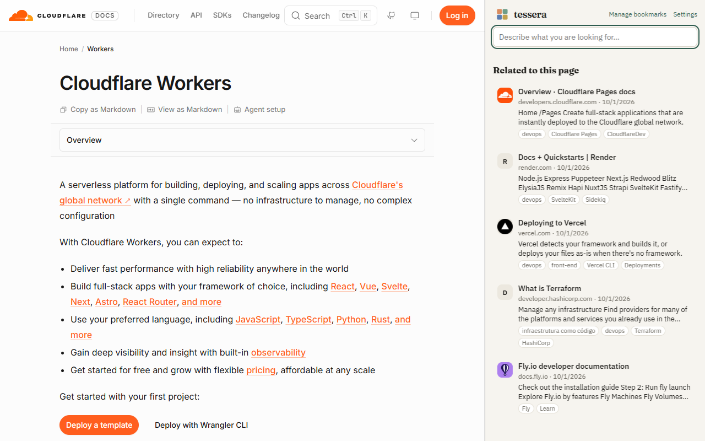
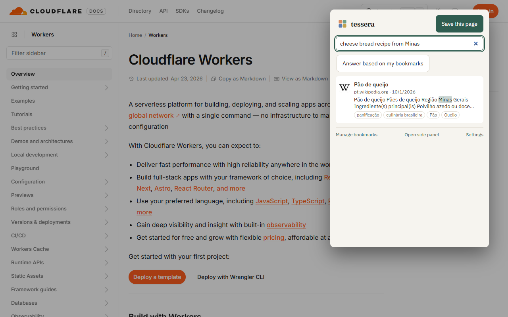
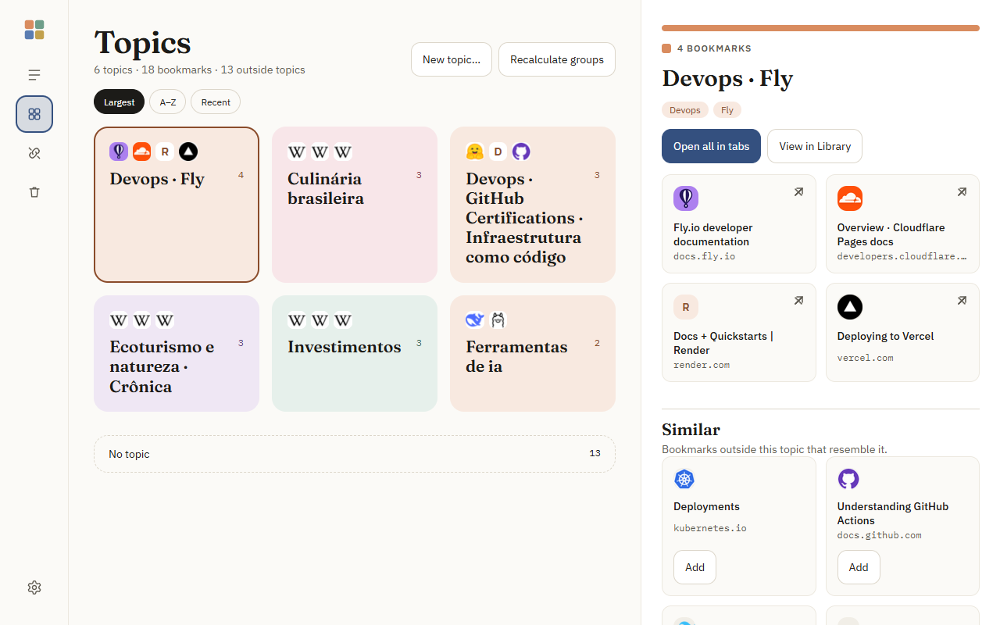
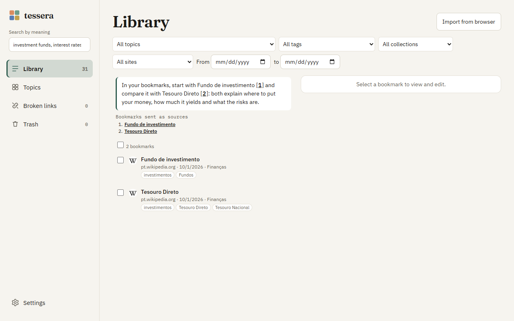
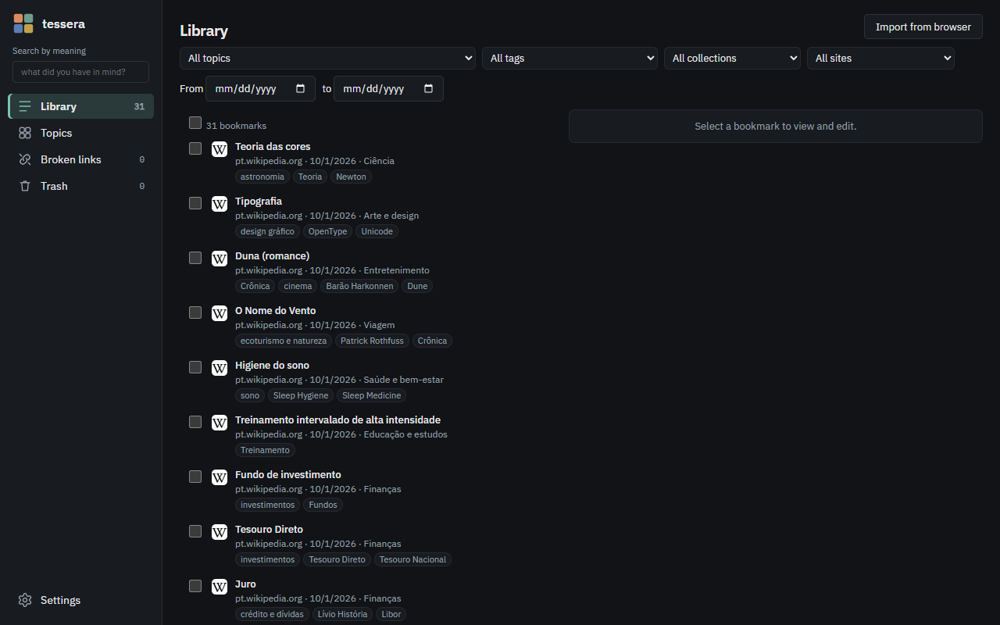

Organizes itself
Every bookmark gets subject tags, a summary and a suggested collection — without you filling anything in.
every link, a piece of the mosaic
Describe what you need — “that cheese bread recipe” — and Tessera finds it, even with other words or in another language. While you browse, it shows on its own the bookmarks related to the open page.
Free · no account · no ads · no telemetry · read the guide

The AI model runs in your browser and understands what each page is about. Here is how that shows up day to day.
Open the side panel on any site and see, without typing anything, your bookmarks about the same subject. Switch tabs and the list follows.
“How to publish a site without a server”, “short home workout”. Results come by meaning, with the matching excerpt highlighted — even when the page uses other words or another language.

No predefined category list: Tessera groups bookmarks by what they have in common, and names come from the members themselves.

Optional, with your own key for an AI service (Anthropic, OpenAI, DeepSeek, Ollama or compatible). The answer comes with [1] citations that open the bookmark used — and, without enough basis, it says so.

Three appearances — Calm (space and reading), Dense (many bookmarks per screen) and Visual (tiles in the topic color) — in light, dark or following the system. English and Portuguese.

Every bookmark gets subject tags, a summary and a suggested collection — without you filling anything in.
Import your Chrome or Edge bookmarks in one click. The browser's original tree is never modified.
A discreet “+” tells you when a page you keep visiting deserves to be saved. Only counters, without the address.
Pages visited in the last 90 days show up marked in search, with “Save” in one click. Turning it off deletes everything.
Check your bookmarks and see why each one failed. 30-day trash; export and import everything as JSON.
Alt+Shift+S saves the page, Alt+Shift+F opens search and sf in the address bar searches right away.
No sign-up. The guide shows every screen in detail.
There is no Tessera server. Your data doesn't go through us because there is no “us” in the way.
Yes. No paid plan, no ads and no account. If you use an AI service with your own key, that service bills you, and Tessera helps you control it with a monthly limit.
Google Chrome and Microsoft Edge on desktop (Windows, macOS and Linux).
No. With a compatible card, Tessera uses a larger, more accurate model (EmbeddingGemma); without one, it uses a smaller model that runs on the processor.
Once the model is downloaded, searching and organizing work offline. The connection is only used to read new pages, check links and — if you turn it on — the AI service.
No. Tessera only reads the bookmark tree to import and follow new ones. It is never modified.
No. Search by meaning, related bookmarks and organization work with local AI. A key is only for richer tags and answers with citations.
Open an issue at github.com/casheiro/tessera/issues. Don't include personal data or your API key.